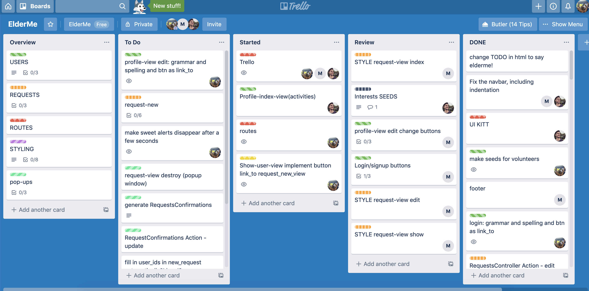
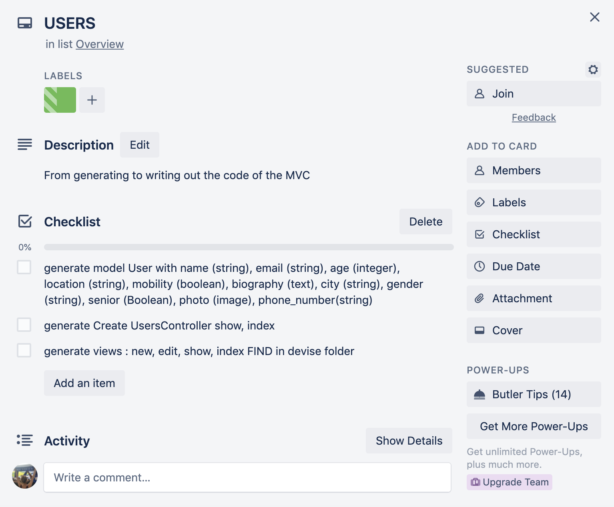
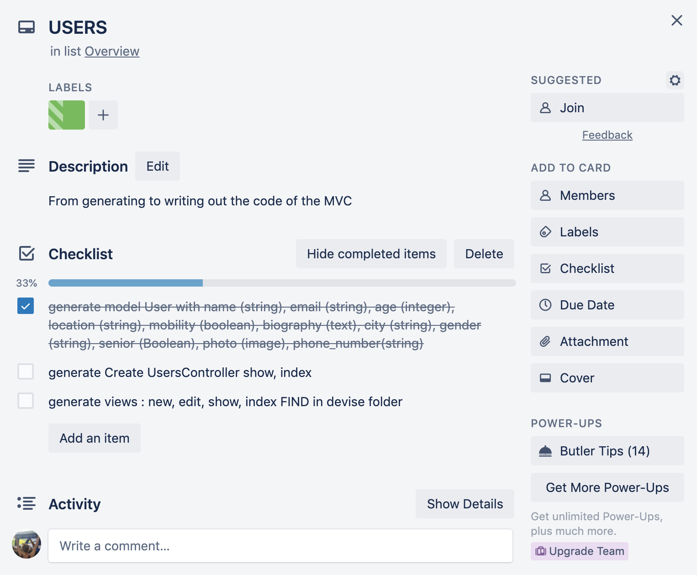
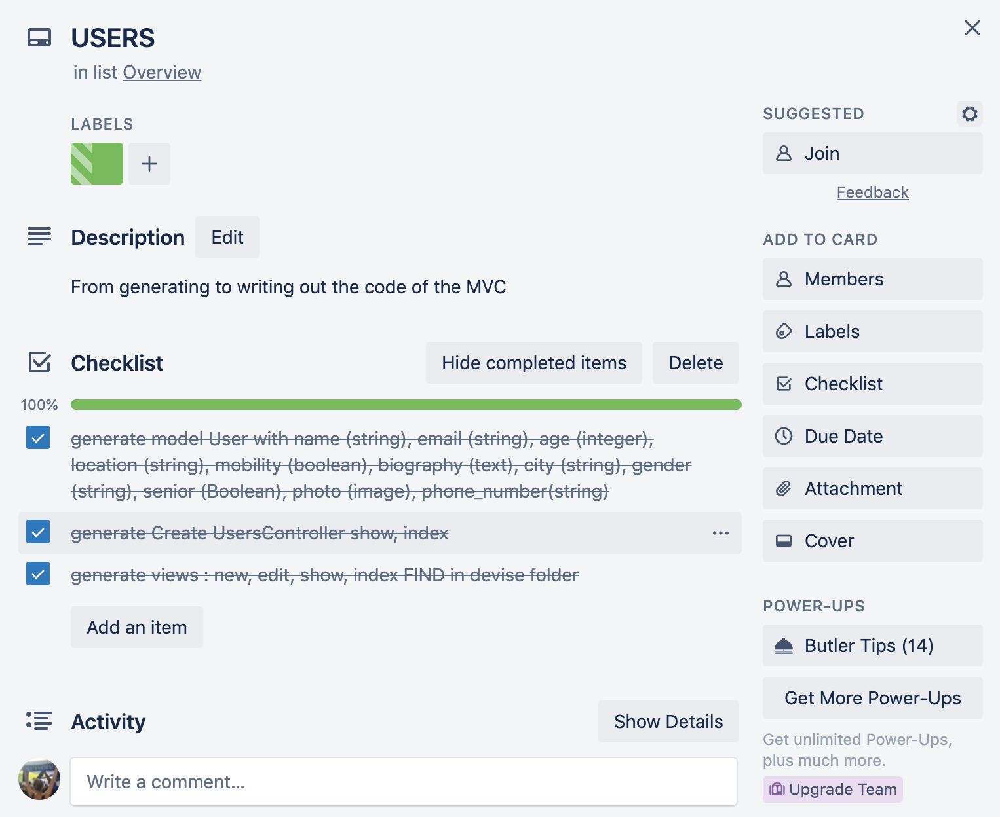

Case study ElderMe
Goal
The product should facilitate the interaction and shared activities of elder persons and volunteers.The elder person can choose what activity they are interested in and be shown a selection of volunteers that share that interest. Then they can check out the volunteers profile and send them a meeting request with date and time. The volunteer then can accept or decline the request. If accepted, the meeting will be inserted into the users’ calendar. They can be edited or deleted.
This project presented an opportunity to build a web application with ruby on rails from scratch, as well as work in a collaboration and collegial environment. As the DRI (designated responsible individual) of the team it tought me to take charge, be responsible and take ownership of things that didn't go as planned.
Approach
The guidelines of this project were specifying that all team members will work on both the front and back end. That brought its own difficulties with it - a certain disinterest, disliking or insecurity in one of the areas. We tried to divide the work up equally, but preferences showed early on that it made more sense to let each team member focus on what they wanted to be their area of expertise.
First steps:

- First we needed to setup the rails template, create a repository on GitHub, buy a domain name, and set up a host - in this case Heroku.
- Although we sat at the same group of tables, we had our own slack channel to have a record of our progress, keep every member informed and not interrupt them in their work flow.
- To keep a project overview, we drew out a map of the different page views and their correlation with pen and paper. This step was repeated every morning, so it would be up to date and we would know which parts of the project were finished and which task(s) to assign to which team member.
- We complemented the map with a Trello project online to track all tasks, their assigned developer, and their progress. The tasks sections were grouped together by color labels. The Overview column held all the main groups of tasks, for example the groupings of MVC - model, view and controller - styling, pop-ups and others. These cards were never moved, to be consulted and updated, ticking off the individual tasks located in the checklist. According to these checklists, each item was placed on an individual task card with the same color label and a developer assigned to it. Task cards were accompanied by a feature branch - ideally named the same or similar - and moved to the column correspondent to their progress: To Do, Started, Review, and Done. A card that reached the Review column, had been pushed to GitHub and a pull request had been issued. The assigned developer sent out a notification to the team on slack, so the two others could review the code in the pull request, make suggestions or request changes. One of the two would then merge the feature branch and all members could pull the updated master branch onto their local repositories.
-



